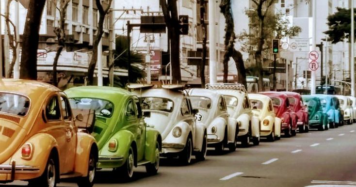

Bem-vindo ao nosso site dedicado ao Fusca!
Celebramos a história do Volkswagen Fusca no Brasil, apresentando seus modelos, curiosidades e imagens que marcaram época. Explore e compartilhe essa paixão com outros admiradores do clássico que nunca sai de moda.Explore
A Origem do Fusca
O Fusca é um dos carros mais icônicos da história, com uma origem ligada à Alemanha dos anos 1930. Criado para ser acessível e prático, o modelo se tornou um verdadeiro símbolo global. Quer saber como esse carro simples conquistou o mundo? Saiba maisA História do Fusca no Brasil
Chegando ao Brasil nos anos 50, o Fusca rapidamente se tornou um dos carros mais populares do país. Acompanhe como ele se transformou em um verdadeiro símbolo nacional, conquistando gerações de brasileiros. Saiba mais
